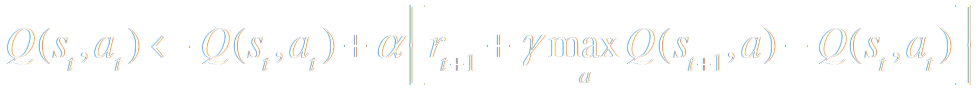

Q-Learning
Q-Learning est un algorithme d'apprentissage par renforcement non supervisé.
L'apprentissage
Q-Learning est un algorithme d’apprentisage non supervisé, aucune connaissance de base n'est requise.
C'est un apprentissage par renforcement: l'agent dispose d'une mémoire vierge qu'il va faire évoluer au gré de ses expériences.
Cette mémoire contient l'ensemble des états (positions) et des actions (8 directions) possibles du système.
Pour chaque couple état-action, une valeur, initialement aléatoire, est mémorisé, amélioré et propagé en plusieurs itérations grâce à la fonction Q.

Cette mémoire permet à postériori à l'agent de savoir instantanément quelle décision prendre quelque soit son état. Nous représentons cette mémoire par un espace fléché.
La récompense r
La mémoire précédement visualisée évolue grâce à la fonction de récompense.
L'agent est capable de déterminer la récompense engendrée par une action en fonction de l'état dans lequel il se trouve.
Cette récompense correspond à la somme de sous-récompenses:
-
Récompense de direction:
Si l'angle de déplacement change, une logique floue est appliqué:
- 0° → 2 points
- ±45° → 1 points
- ±90° → 0 points
- ±135° → -1 points
- ±180° → -2 points
- Récompense d'évitement des murs: une logique floue est appliquée sur la distance à un bord.
- Récompense d'objet: Passer par un objet fait obtenir son poids en récompense.
95 function QL (n, alpha, gamma) { 96 for (var i = 0; i < n; ++i) { 97 applyForEachActionState(function (x, y, a, qsa) { 98 var s = { x: x, y: y }; 99 var aprime = bestAction(s); 100 var sprime = move(s, aprime); 101 var value = qsa + alpha*(getReward(sprime, aprime, s, a) + gamma*Q(sprime, aprime) - qsa); 102 return value; 103 }); 104 } 105 } ... ... 208 var SQRT_2 = Math.sqrt(2); 209 function getReward (s, a, olds, olda) { 210 var r = 0; 211 r += noReturnReward(a, olda); 212 r += objectsReward(olds); 213 r += noWallReward(s); 214 215 if (actionIsDiag(olda)) { 216 r /= SQRT_2; 217 } 218 219 return r; 220 }
déplacement n°0